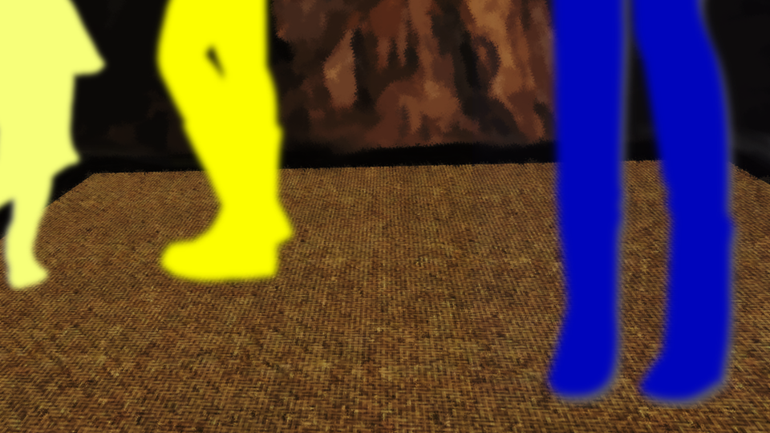

Water

"Mmm... I'm sleepy... I want a bath..."
"Sorry. Stick with us for a bit."
"We were in the middle of our deductions, after all... For this genius girl, Erina Goto, not going was never an opt... Fwaah..."
As planned, we headed for that cave.
"Sorry. Stick with us for a bit."
"We were in the middle of our deductions, after all... For this genius girl, Erina Goto, not going was never an opt... Fwaah..."
As planned, we headed for that cave.
Nothing in particular had happened after that last night.
I'd opened the window to let the wind in and slept with the cherry branch by my pillow, but my intuition hadn't kicked in.
Was a branch like this no use after all?
But since nothing dangerous had happened in the end, I couldn't say that for sure either...
I'd opened the window to let the wind in and slept with the cherry branch by my pillow, but my intuition hadn't kicked in.
Was a branch like this no use after all?
But since nothing dangerous had happened in the end, I couldn't say that for sure either...
"Yoo-hoo!"

"That monkey's lively first thing in the morning..."
Kana-chan was leaping around among the trees.
Yesterday's tiredness seemed to have been blown away somewhere.
Being young sure is nice...
Kana-chan was leaping around among the trees.
Yesterday's tiredness seemed to have been blown away somewhere.
Being young sure is nice...
"Come to think of it, Goto, how did the hunting go yesterday?"

"Ah... In the end, all I did was catch one frog.
Surprisingly, Kana-chan seems to be the considerate type, and she said she'd rather chat than hunt...
And then I got shown to Kana-chan's secret base."
Come to think of it, Kana-chan had carried all our luggage yesterday, and come to the rescue of Goto when she got dragged into the impression contest...
She really did seem to be pretty considerate.

Where we were led was a short way in, after pushing through the trees of the forest―
A hole gaping open in the rocks.
A ceiling a little lower than my height.
A hole gaping open in the rocks.
A ceiling a little lower than my height.

"Natsumi, you sure this is it?"
I tried standing where it seemed to overlap with the vision I'd seen yesterday.
"............ Yeah, this is definitely it."
I tried standing where it seemed to overlap with the vision I'd seen yesterday.
"............ Yeah, this is definitely it."
"Sakura-san seems to have used it as a secret base when she was a kid too, so there may be some connection here."
If so, it's very possible that Kotaro-san and Ojisan, her childhood friends, came and went here too.
If so, it's very possible that Kotaro-san and Ojisan, her childhood friends, came and went here too.
And it was a place the people of the settlement didn't know about.
No, maybe Kana-chan only assumes nobody knows, and residents have been using it for generations.
No, maybe Kana-chan only assumes nobody knows, and residents have been using it for generations.


So this was the secret base―
Sunlight filtered faintly through the gaps in the rock ceiling.
In yesterday's vision, I hadn't been able to see the background clearly.
This really is the place, isn't it? Am I right...?
Sunlight filtered faintly through the gaps in the rock ceiling.
In yesterday's vision, I hadn't been able to see the background clearly.
This really is the place, isn't it? Am I right...?
"Kana-chan, does this secret base go any farther back than here?"
"Farther back...? This is the very back?"
The sun was shining in, but the angle was still shallow, and it was dim and a little cramped.
I couldn't clearly see all the way into the corners.
"Farther back...? This is the very back?"
The sun was shining in, but the angle was still shallow, and it was dim and a little cramped.
I couldn't clearly see all the way into the corners.
Dark and cramped...?
Yesterday, Chiga-nee had named 'a dark, cramped place' as a condition for Sakura-san's intuition to kick in.
This matched that condition too...
Yesterday, Chiga-nee had named 'a dark, cramped place' as a condition for Sakura-san's intuition to kick in.
This matched that condition too...

"Natsumi, it's a dark, cramped place..."
"Yeah... so Sakura-san was in here..."
"It matches so well it's creepy."
But there was nothing especially strange to be seen.
"Yeah... so Sakura-san was in here..."
"It matches so well it's creepy."
But there was nothing especially strange to be seen.

An old rush mat was spread on the ground, and in a corner was trash from snacks and juice.
Other than that, nothing stood out...
Other than that, nothing stood out...
"............
This place is a little strange after all."
"It's true it stands out too much to call it a secret base... There's no way nobody would've noticed it for 800 years..."
"No, that's not what I mean... Hey, Kana-chan, what happens here when it rains?"
"It's true it stands out too much to call it a secret base... There's no way nobody would've noticed it for 800 years..."
"No, that's not what I mean... Hey, Kana-chan, what happens here when it rains?"
"Rain...?
It pours down through the hole in the ceiling like a waterfall! Then I can't use it for a while..."
"Did it not rain around here yesterday...?"
"Seems like yesterday's was just on the mountain road, so I don't think it rained that much around here?"
"Did it not rain around here yesterday...?"
"Seems like yesterday's was just on the mountain road, so I don't think it rained that much around here?"
"Even so, this place is strange.
Yesterday the mat was a little damp, so it must have rained here too.
This spot is a little lower than the entrance, so there's nowhere for the rain to drain to."
True, there were no puddles here.
The air was a little damp, but for a hole like this, the humidity was about right.
True, there were no puddles here.
The air was a little damp, but for a hole like this, the humidity was about right.
"Isn't it draining out through some crack in the rock you can't see?"
"In that case, there should be more moss and such growing. No moss means that even when rain flows in, it drains away very quickly. In other words, there's a big hole or gap we can't see―"
"In that case, there should be more moss and such growing. No moss means that even when rain flows in, it drains away very quickly. In other words, there's a big hole or gap we can't see―"
Goto said so and took hold of the mat.
"Hup...
Huh...?"
But Goto didn't seem able to peel the mat off.
But Goto didn't seem able to peel the mat off.

On closer inspection, there were stakes driven into the four corners.

"Just to hold down the mat of a secret base, stakes...?
There's definitely something hidden under here!"
And then Goto tried to rip the mat up by force.
"Ngh-ngh-ngh...!
Haah, it's no good... This hemp mat is as thick as a carpet...
And it looks old, but only because the stains stand out. It actually seems newer than I expected..."
"So someone changed the mat here recently?"
"Probably. Kana-chan, when did this mat get changed?"
"Huh...? I dunno... It's dark in here, and I never paid attention to that stuff..."
"So someone changed the mat here recently?"
"Probably. Kana-chan, when did this mat get changed?"
"Huh...? I dunno... It's dark in here, and I never paid attention to that stuff..."
Then Goto began studying the stakes closely.
With the light not reaching them well, I'd have thought they were hard to see...
Goto found the head of a stake and ran the pad of her finger over it.
With the light not reaching them well, I'd have thought they were hard to see...
Goto found the head of a stake and ran the pad of her finger over it.
"There's a groove for a screwdriver. These weren't driven in. Sockets for bolts are buried in the ground, and the mat is fastened with bolts.
That means the mat gets taken off pretty often..."
"What!? So lots of people have been coming into my secret base!? Nooo..."
Kana-chan, who had thought the base was hers alone, learned that people had been coming and going, and a heartbroken look came over her face.
"What!? So lots of people have been coming into my secret base!? Nooo..."
Kana-chan, who had thought the base was hers alone, learned that people had been coming and going, and a heartbroken look came over her face.

"At least it means there's something under here... And a space big enough for water to flow into..."
"No doubt about it... I'm sure Erika-chan knows about this too."
"No doubt about it... I'm sure Erika-chan knows about this too."
"Is someone there!?"
Suddenly, a voice came from the direction of the entrance.
Suddenly, a voice came from the direction of the entrance.

"Cr-crap! Hide!"

"There's nowhere to hide in a place like this...!"
The footsteps slowly came toward us.
The footsteps slowly came toward us.

"Haruka...?"
"M-Mom!?"
Read ✓ Next in this arc →